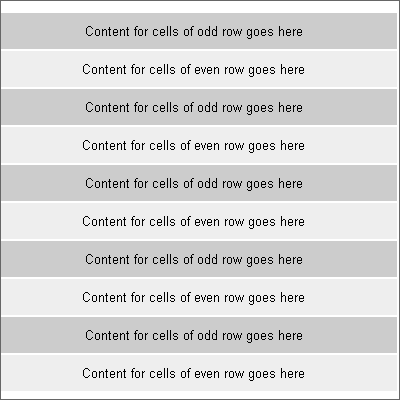

Aplicaciones RIA
en HTML5
José Manuel Corral
4 Febrero, 2014
Introducción a HTML5
HTML5 es la combinación de las diferentes tecnologías:
- Lenguaje de Marcado HTML (versión 5)
- Hojas de Estilo en cascada CSS (versión 3).
- Nuevas funcionalidades en la Api de Javascript.

Novedades en el Lenguaje de Marcado HTML5
Ejemplo documento base en HTML5
Un primer ejemplo de un documento mínimo en HTML 5 sería:
<!DOCTYPE html>
<html>
<head>
<meta charset="UTF-8">
<title>Title of the document</title>
</head>
<body>
Contenido del documento
</body>
</html>
Nuevos Tags en HTML 5: Canvas
El elemento canvas puede definirse como un entorno para crear imágenes dinámicas. El propio elemento es relativamente simple. Lo único que hay que especificar al usarlo son sus dimensiones.
<canvas id="entorno_canvas" width="360" height="240">;
</canvas>
Cualquier cosa que escribamos entre la apertura y cierre de la etiqueta canvas solamente será interpretado por navegadores que no soportan aún la nueva etiqueta.
<canvas id="entorno_canvas" width="360" height="240">
<p>Tu navegador no soporta canvas: Aquí deberías de ver una imagen :</p>
<img src="html5_logo.png" alt="HTML5" />
</canvas>
Nuevos Tags en HTML 5: Audio
Empotrar un archivo de audio en HTML5 es muy simple:
<audio src="archivo.mp3">
</audio>
Si queremos más opciones:
<audio src="archivo.mp3" autoplay loop controls>
</audio>
Es posible controlarlo desde Javascript
var player = document.getElementsByTagName('audio');
player.play();
player.stop();
player.volume += 0.1;
player.volume -= 0.1;
Nuevos Tags en HTML 5: Video
Empotrar un archivo de video en HTML5 es muy simple lo ideal es darle un tamaño:
<video src="archivo.mp4" controls width="360" height="240">
</video>
Si queremos más opciones:
<video src="archivo.mp4" autoplay loop controls width="360" height="240">
</video>
Es posible controlarlo desde Javascript
var player = document.getElementsByTagName('video');
player.play();
player.stop();
player.volume += 0.1;
player.volume -= 0.1;
Nuevos Tags en HTML 5: Tags Semánticos
Nuevos tags que ayudan a los motores de búsqueda a localizar el contenido de nuestra web.
<body>
<header>
<hgroup>
<h1>Titulo Pagina</h1>
<h2>Titulo de Subpagina</h2>
</hgroup>
</header>
<nav>
<ul>
Navegacion
</ul>
</nav>
<section>
<article>
<header>
<h1>Title</h1>
</header>
<section>
Contenido
</section>
</article>
</section>
Nuevos Tags en HTML 5: Tags Semanticos (II)
<aside>
Información adicional
</aside>
<figure>
<img src="..."/>
<figcaption>Pie de foto</figcaption>
</figure>
<footer>
Pie de pagina
<time datetime="2010-11-08">2010</time>.
</footer>
</body>
Estas nuevas etiquetas, para el DOM, són iguales a una etiqueta <DIV>. Són etiquetas que se utilizan para categorizar el contenido.
Nuevos Tags en HTML 5: Formularios
Lista de Elementos con Autocompletado
<input list="cars"/>
<datalist id="cars">
<option value="BMW"/>
<option value="Ford"/>
<option value="Volvo"/>
</datalist>
Demo
Nuevos Tags en HTML5: Formularios (II)
Barras de progreso:
<progress value="75" max="100">3/4 complete</progress>
Demo
Nuevos Tags en HTML5: Formularios (III)
La etiqueta input ahora posee muchas características que nos hará la vida más facil.
<input type="text" required />
<input type="email" value="some@email.com" />
<input type="date" min="2010-08-14" max="2011-08-14" value="2010-08-14"/>
<input type="range" min="0" max="50" value="10" />
<input type="search" results="10" placeholder="Search..." />
<input type="tel" placeholder="(555) 555-5555"
pattern="^\(?\d{3}\)?[-\s]\d{3}[-\s]\d{4}.*?$" />
<input type="color" placeholder="e.g. #bbbbbb" />
<input type="number" step="1" min="-5" max="10" value="0" />
Demo:
Nuevos Tags en HTML5: Formularios (IV)
Teniendo en consideración los mobiles/tablets, etc...
<input type="text" />
<input type="number" />
<input type="email" />
<input type="tel" />


Nuevos Tags en HTML5: Tags Deprecados
Esta es la lista de tags html de versiones anteriores, ya eliminados.
<acronym>
<applet>
<basefont>
<big>
<center>
<dir>
<font>
<frame>
<frameset>
<isindex>
<noframes>
<s>
<strike>
<tt>
<u>
Novedades en CSS3
Nuevos Selectores
Para saber si un elemento es par o impar, y aplicar en cada caso un estilo diferente
.row:nth-child(even) {
background: #dde;
}
.row:nth-child(odd) {
background: white;
}
Es muy común el uso de esto en "tablas zebra".
Más Selectores nuevos
/* Utilizado para alineaciones tipo imagen
div {
display: inline-block
}
/* Selector para los inputs que tienen un atributo específico */
input[type="text"] {
background: #eee;
}
/* Negaciones */
:not(.box) {
color: #00c;
}
:not(span)
{
display: block;
}
/* seleccionando aún de forma más específica
h2:first-child {...}
div.text > div {...}
h2 + header {...}
WebFonts
@font-face {
font-family: 'MiFuenteMolona';
src: url('pathAmiFuenteMolona.otf');
}
h1 {
font-family: 'MiFuenteMolona'
}
Con la directiva CSS @font-face podremos definir tantas fuentes como sea necesario para nuestra página. El navegador tratará de descargarlas y utilizarlas allá donde sean necesarias.
Opacidad
div {
background-color: rgba(255,0,0,0.47);
}
Demo:
Bordes Redondeados
div{
border-radius: 18px;
}
Demo:
Gradientes o degradados
background: -webkit-gradient(linear, left top, left bottom, from(#00abeb),
to(white), color-stop(0.5, white), color-stop(0.5, #66cc00));
background: background: -webkit-radial-gradient(ellipse cover, #66f, #f80, #ffc);
Flexible Box Model
.box {
display: box;
box-orient: horizontal;
}
.box .one, .box .two{
box-flex:1;
}
.box .three {
box-flex: 3;
}
Demo: